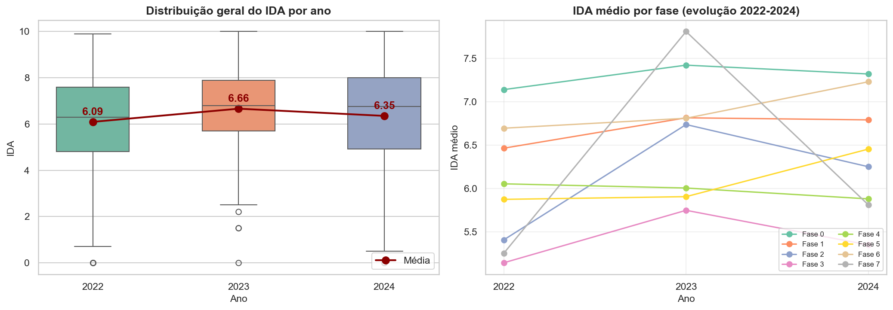
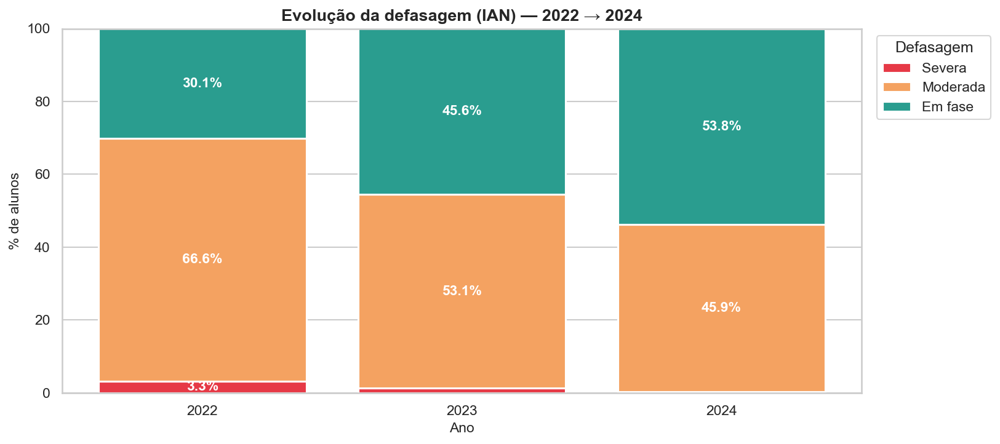
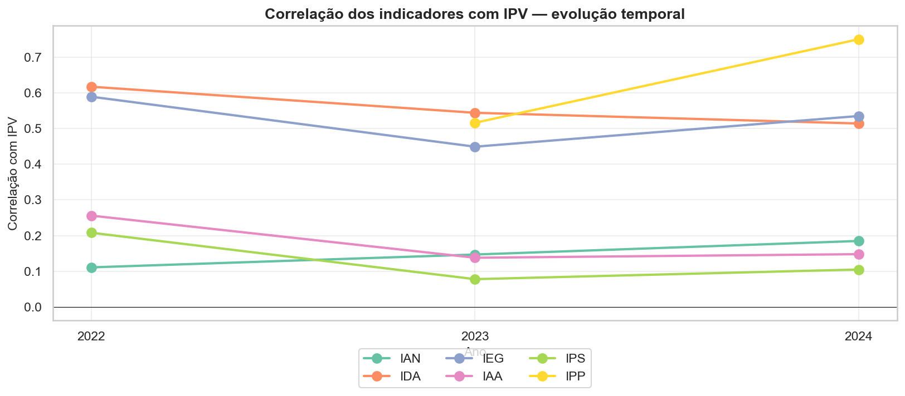
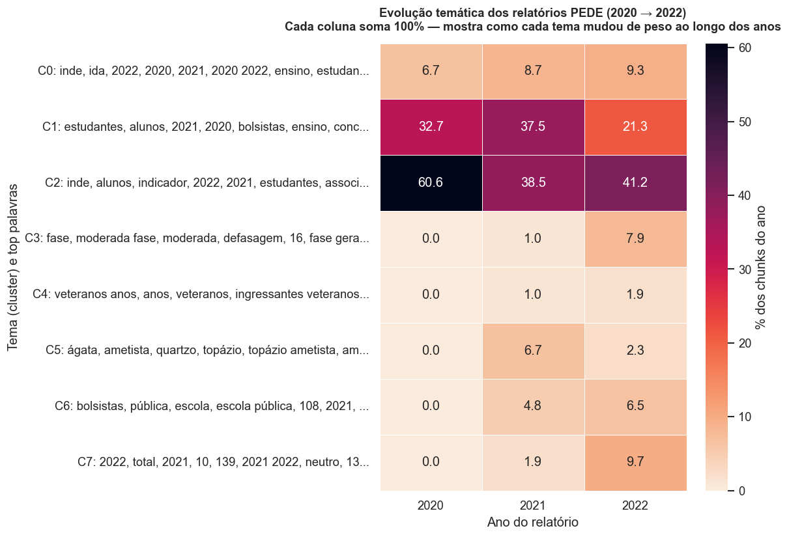
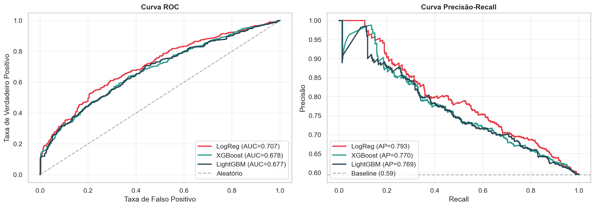
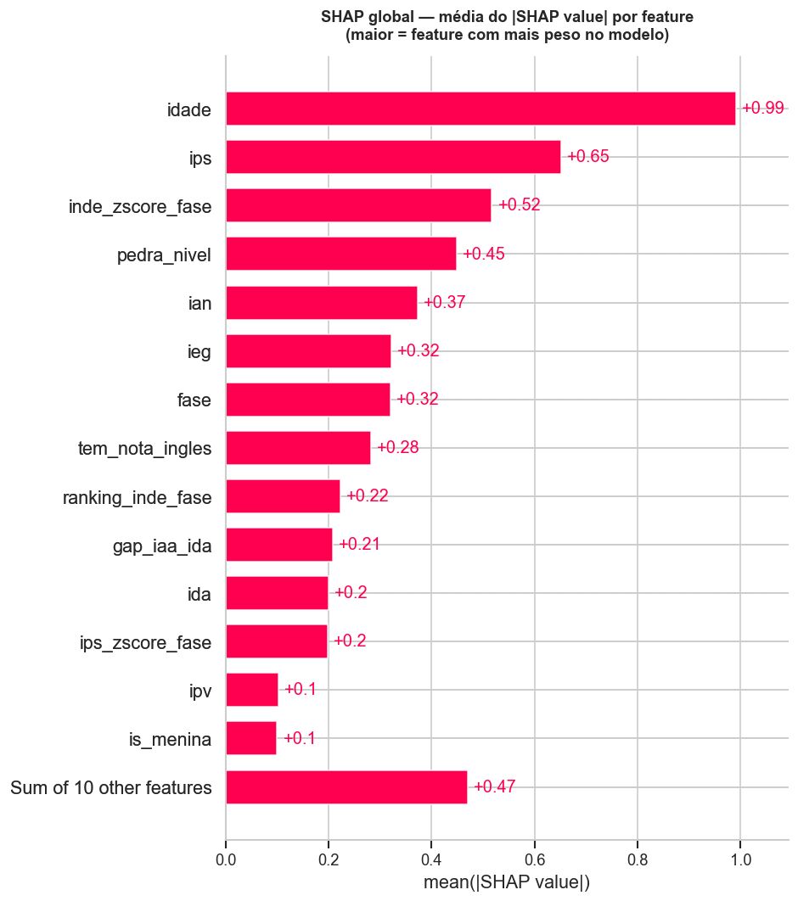
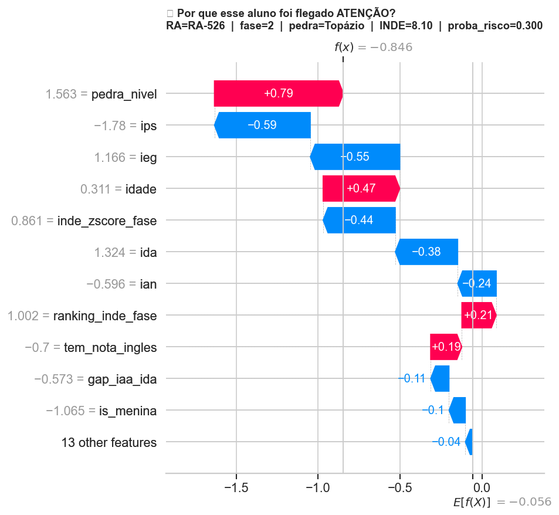
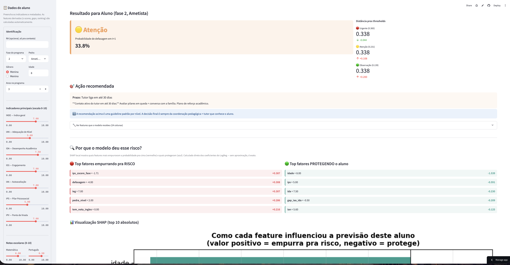

Um modelo preditivo para a Associação Passos Mágicos identificar defasagem antes da queda — não depois.
Em 35 anos transformando vidas pela educação, a ONG construiu evidência sólida de impacto.
A Passos coleta 7 indicadores anuais — dá pra prever defasagem em t+1 a partir de t?
De Quartzo a Topázio, o desempenho acadêmico médio sobe consistentemente — evidência empírica do impacto da Passos.

O IAN (adequação de nível) revela um problema que o IDA médio mascara: 1 em cada 3 alunos chega defasado — e continua.

O IPV (ponto de virada) correlaciona com IDA, IEG e IPS simultaneamente. Olhar um indicador isolado engana — o modelo precisa integrar todos.

Extraí 95 mil palavras dos relatórios PEDE 2020/21/22 via OCR + embeddings + clustering. O resultado é uma convergência narrativa.

PR-AUC é a métrica certa pra esse problema (defasagem é minoria, ~40%). LogReg empata em desempenho e ganha em interpretabilidade.

Consenso entre permutation importance e SHAP — duas técnicas independentes, mesmo top 5. Sinal robusto.

Em vez de "risco sim/não", criei thresholds que mapeiam cada aluno pra uma ação concreta — alinhada com a capacidade da ONG.
O SHAP local responde feature por feature. Toda predição é auditável — a Passos não opera caixa-preta.

Tutor preenche os indicadores → recebe nível de risco, ação recomendada e o SHAP local. Tudo numa tela só.

Tirando o modelo do código e colocando na operação semanal da ONG.